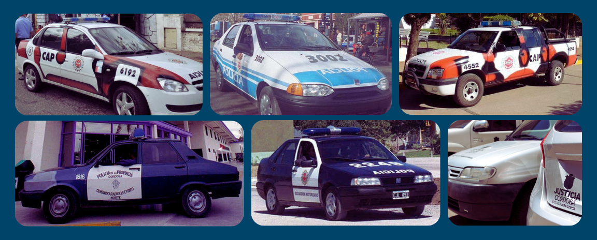

Baja
Pasos y Procedimientos
En la gestión de la flota vehicular policial, tanto para propósitos operativos como administrativos, la eficiencia y la responsabilidad son pilares fundamentales. La baja administrativa y operativa de un vehículo adquiere un carácter crucial que demanda una atención especializada y decisiones fundamentadas.
La efectiva administración de los vehículos policiales no solo asegura el óptimo funcionamiento de las operaciones policiales, sino que también garantiza la seguridad de la comunidad y el uso eficiente de los recursos del Estado. En este contexto, la baja de un vehículo, ya sea por motivos económicos, técnicos o legales, requiere un análisis exhaustivo y una planificación estratégica.
¿Qué implica la baja de un vehículo?
La baja de un vehículo no es simplemente retirarlo de circulación, sino un procedimiento que involucra una serie de trámites administrativos. Este proceso se inicia cuando el oficial jefe a cargo del movil o el personal designado y autorizado por el mismo, presenta formalmente la solicitud de baja. Las razones pueden variar, desde consideraciones financieras hasta condiciones operativas del vehículo.
Tipos de bajas: Patrimonio y Secuestro
Es crucial comprender que existen diferentes contextos en los cuales se puede dar de baja un vehículo policial. Por un lado, están aquellos vehículos que forman parte del patrimonio provincial, cuya gestión y disposición siguen los lineamientos establecidos por las autoridades competentes. Por otro lado, están los vehículos asignados como depósito judicial, cuya baja está sujeta a los procedimientos legales establecidos por el Tribunal Superior de Justicia.
Nº1: Vehículos de procedencia patrimonial:
La evaluación de la viabilidad de mantener un vehículo en servicio requiere un análisis detallado de los costos operativos, el estado técnico - mecànico y las necesidades operativas. La decisión de dar de baja un vehículo patrimonial implica consideraciones financieras, logísticas y estratégicas que impactan directamente en la eficiencia y la efectividad de las operaciones policiales.
Patrimonio
Documentaciòn a presentar:
| Nombre | Descripciòn | Descarga |
|---|---|---|
| Nota de solicitud de baja | Debe estar emitida por la dependencia a la cual pertenece el mòvil y firmada por el oficial jefe a cargo del mismo. | descargar |
| Informe Tècnico - Mecànico | Deberà ser confeccionado y firmado por un personal logistico idoneo y el oficial jefe a cargo del mòvil. | descargar |
| Informe Libre de Deuda | El vehiculo no debe presentar multas de transito impagas para iniciar el tramite de baja. El informe se descarga del siguiente link, ingresando el dominio del vehìculo. | ir |
| Fotos de la unidad | Se deben tomar cuatro fotos del vehiculo, parte frontal, trasera, lateral derecho e izquierdo, las mismas deben ser claras y representar el estado de la unidad. Un juego de las mismas debera ser impresa a color y la copia en blanco y negro. Todo debe estar certificado y firmado con sello de copia fiel. | descargar |
| Acta de Inventario | El mismo debe se confeccionado por personal idoneo, con firma y aclaraciòn, a su vez debe estar firmado por el jefea cargo y sello oval de la dependencia. | descargar |
Ejemplo de Baja: Patrimonio
Aqui puedes descargar un ejemplo en formato PDF de la documentacion presentada para la baja de un Mòvil de procedencia patrimonio.
Nº2: Vehículos de procedencia secuestro:
Cuando el Tribunal Superior de Justicia asigna un vehículo (secuestro) mediante oficio, en caracter de depósitario judicial, el proceso de baja implica una coordinación estrecha entre la policía y el sistema judicial. En este caso la solicitud de baja administrativa de la flota policial debe estar respaldada en primer lugar por el oficio de desafectacion emitido por el T.S.J. Asi mismo si la volntad de iniciar el tramite de baja se debe al deterioro o desperfecto mecanico de la unidad, se debe tramitar a travez de la Direccion Logistica el pedido del oficio de desafectacion correspondiente y asi poder dar inicio a la baja administrativa policial en esta oficina. Se deben considerar las implicaciones logísticas y presupuestarias para garantizar una gestión transparente y eficiente de los recursos.
Secuestro
Documentaciòn a presentar:
| Nombre | Descripciòn | Descarga |
|---|---|---|
| Oficio de Desafectaciòn | Debe estar emitido por el T.S.J. en donde se pone en conocimiento sobre la desafectacion del vehìculo al Sr. Jefe de Policia y al Sr. Jefe del Deposito Judicial correspondiente para autorizar el ingreso del vehiculo en la dependencia a su cargo. | descargar |
| Nota de solicitud de baja | Debe estar emitida por la dependencia a la cual pertenece el movil y firmada por el oficial jefe a cargo del mismo. | descargar |
| Informe Tècnico - Mecànico | Deberà ser confeccionado y firmado por un personal logistico idoneo y el oficial jefe a cargo del mòvil. | descargar |
| Informe Libre de Deuda | El vehiculo no debe presentar multas de transito impagas para iniciar el tramite de baja. El informe se descarga del siguiente link, ingresando el dominio del vehìculo. | ir |
| Fotos de la unidad | Se deben tomar cuatro fotos del vehiculo, parte frontal, trasera, lateral derecho e izquierdo, las mismas deben ser claras y representar el estado de la unidad. | descargar |
| Acta de Inventario | El mismo debe se confeccionado por personal idoneo, firmado y sellado. | descargar |
Ejemplo de Baja: Secuestro
Aqui puedes descargar un ejemplo en formato PDF de la documentacion presentada para la baja de un Mòvil de procedencia secuestro.